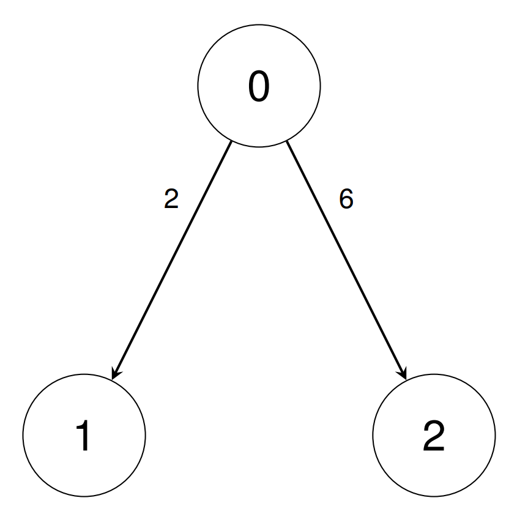
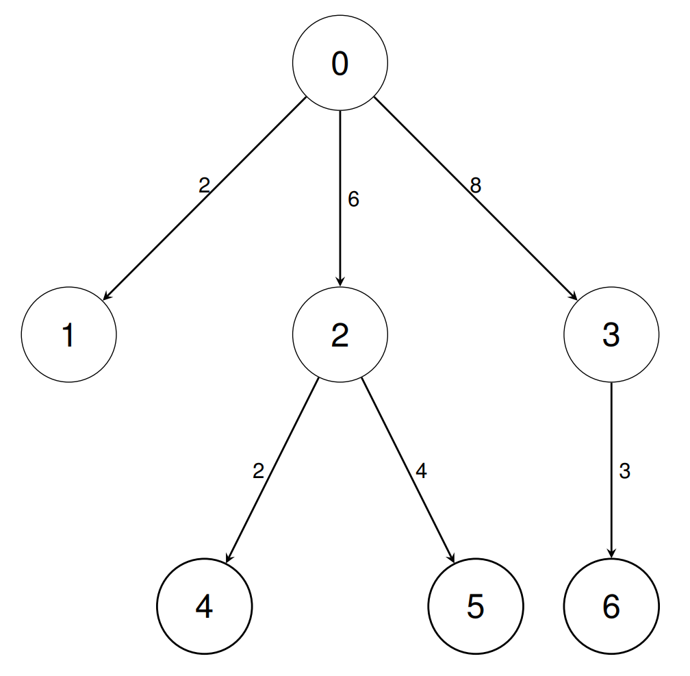

| Category | Difficulty | Likes | Dislikes |
|---|---|---|---|
| Algorithms | Medium | 4 | 7 |
array | math | depth-first-search | breadth-first-search | graph
There are n types of units indexed from 0 to n - 1.
You are given a 2D integer array conversions of length n - 1, where conversions[i] = [sourceUniti, targetUniti, conversionFactori]. This indicates that a single unit of type sourceUniti is equivalent to conversionFactori units of type targetUniti.
You are also given a 2D integer array queries of length q, where queries[i] = [unitAi, unitBi].
Return an array answer of length q where answer[i] is the number of units of type unitBi equivalent to 1 unit of type unitAi, and can be represented as p/q where p and q are coprime. Return each answer[i] as pq-1 modulo 109 + 7, where q-1 represents the multiplicative inverse of q modulo 109 + 7.
Example 1:
Input: conversions = [[0,1,2],[0,2,6]], queries = [[1,2],[1,0]]
Output: [3,500000004]
Explanation:
conversions[0], then conversions[1].conversions[0]. We return 500000004 since it is the multiplicative inverse of 2.
Example 2:
Input: conversions = [[0,1,2],[0,2,6],[0,3,8],[2,4,2],[2,5,4],[3,6,3]], queries = [[1,2],[0,4],[6,5],[4,6],[6,1]]
Output: [3,12,1,2,83333334]
Explanation:
conversions[0], then conversions[1].conversions[1], then conversions[3].conversions[5], the inverse of conversions[2], conversions[1], then conversions[4].conversions[3], the inverse of conversions[1], conversions[2], then conversions[5].conversions[5], the inverse of conversions[2], then conversions[0]. We return 83333334 since it is the multiplicative inverse of 12.
Constraints:
2 <= n <= 105conversions.length == n - 10 <= sourceUniti, targetUniti < n1 <= conversionFactori <= 1091 <= q <= 105queries.length == q0 <= unitAi, unitBi < n